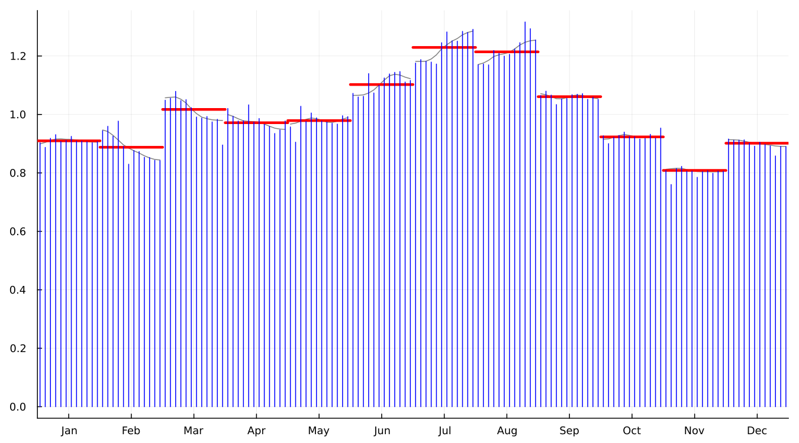
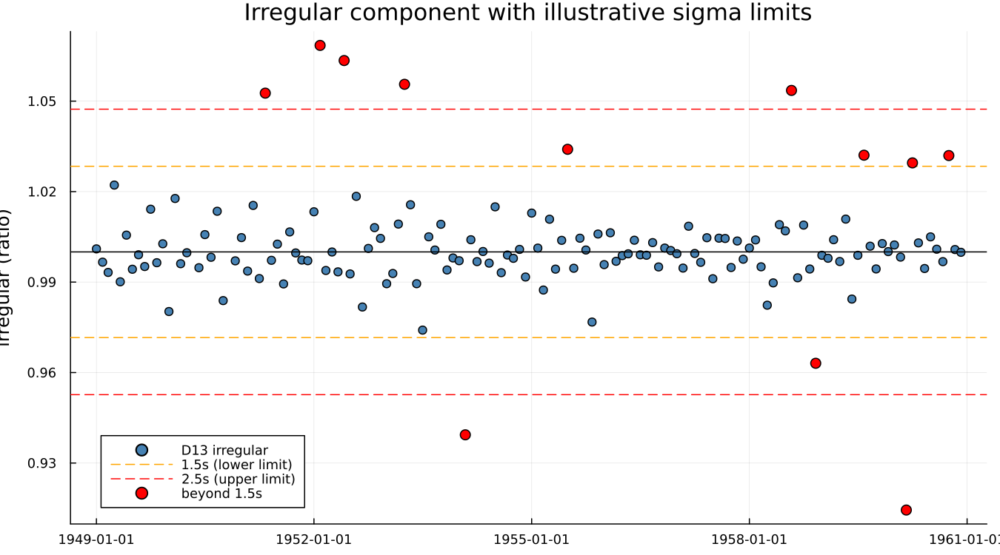
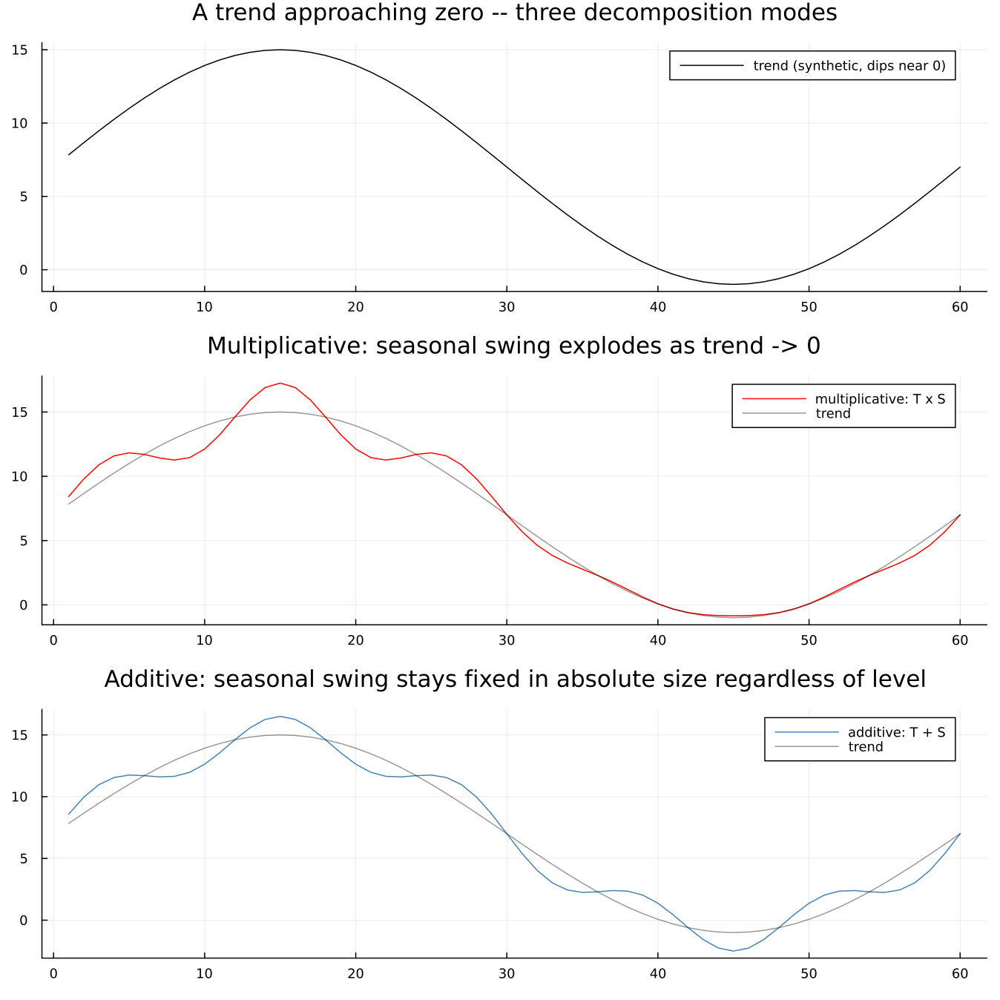

8. Extreme Values and Decomposition Modes
8.1 Sigma limits and graduated weights
An unusual month distorts more than just itself. Because the seasonal factor for, say, every March is estimated from all the Marches in the data, one anomalous March pulls the seasonal estimate for every other March slightly off too. X-11's response is not to delete the offending point — deleting data is rarely the right answer — but to measure how far each irregular value sits from the bulk of the others and give it a graduated weight that falls smoothly to zero as the deviation grows, replacing heavily-downweighted points with an estimate built from neighbouring years rather than discarding them outright.
monthplot is the single most informative chart X-11 produces, and it is the direct payoff of Chapter 6's "filter across years, not along the series" idea: each of the twelve bands below is one calendar-position subseries, the stems are the individual SI ratios (the scatter Chapter 4 first introduced), and the heavy bar is the fitted seasonal factor for that month:

The irregular component itself, with illustrative sigma limits marked:

X-13's own defaults are siglim = (1.5, 2.5) — confirmed by reading the value back from a real run rather than assumed from memory, since the pair is easy to misremember or transpose. A point beyond the lower limit starts losing weight; beyond the upper limit it is fully replaced. The bands drawn here use the irregular's own whole-series standard deviation as an illustrative scale — X-13's actual internal computation standardises per calendar month rather than across the whole series, so treat the specific flagged points as indicative, not a claim to have reproduced X-13's exact internal test.
This is a genuinely different mechanism from a regARIMA outlier, and the distinction matters: X-11's extreme-value replacement happens inside the filter, is silent, and leaves no explicit record beyond the replaced value itself. A regARIMA outlier (Chapter 12) is estimated as a regression coefficient, reported with a standard error, and can be inspected or removed. Both exist in a full X-13 run, they do different jobs, and it is a common confusion to treat them as the same thing.
8.2 Four decomposition modes
The choice between multiplicative, additive, pseudo-additive and log-additive is not cosmetic — it is a claim about how the seasonal swing relates to the level of the series.
- Multiplicative (
observed = trend × seasonal × irregular): the seasonal swing grows in proportion to the level. Most economic series that grow over time behave this way —airlineis the clean textbook case, confirmed multiplicative throughout this book. - Additive (
observed = trend + seasonal + irregular): the swing stays a fixed absolute size regardless of level. - Log-additive: additive decomposition performed on the logged series, equivalent in spirit to multiplicative but estimated differently.
- Pseudo-additive: exists specifically for series whose level approaches zero. A multiplicative seasonal factor would have to explode toward infinity to represent a fixed-looking swing as the level shrinks toward nothing, and a plain additive model is usually wrong in the interior of a series that is mostly well away from zero. Pseudo-additive blends the two.
No dataset bundled with this package actually approaches zero, so the figure below is a labelled schematic on synthetic data, not a real X-13 run, illustrating why the problem exists rather than demonstrating X-13's own handling of it:

A synthetic trend dips toward zero at its trough. Multiplied by a fixed 15%-of-level seasonal factor, the swing visibly distorts and would grow without bound the closer the trend sat to exactly zero; added instead, the swing stays a constant absolute size no matter how low the trend runs — which is a different, but equally real, kind of wrong once the series is back up at a high level. This figure will be replaced with a real X-13 run once a genuinely near-zero or zero-crossing series is available; the schematic is here so the chapter does not promise a comparison it cannot yet make with real data, while still making the underlying reason concrete.
A statistical office does not typically re-test the decomposition mode every period. The mode is fixed by convention for a given published series, because switching it mid-history would make the published time series incomparable with itself across the switch — a discontinuity with nothing behind it but a methodological choice.
See also: Chapter 4's toy filter, which is deliberately multiplicative- only and has no extreme-value handling at all — everything in this chapter is what that toy leaves out. Chapter 12 for the regARIMA outlier mechanism this chapter's sigma-limit replacement is often confused with.